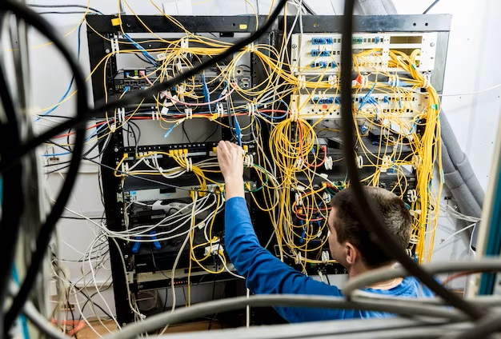
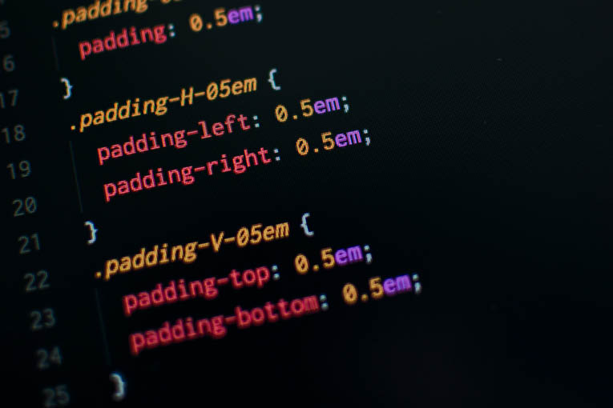

Periodista en medios escritos, digitales y televisión, en Santiago y regiones. amplia experiencia en desarrollo de contenido para medios y comunicaciones corporativas.
Mi Experiencia

Más de 20 años de experiencia en empresas de ingeniería, desarrollando proyectos de cableado estructurado, redes inalámbricas y plataformas de monitoreo y vigilancia.

Primeros pasos en programación, conocimientos básicos de HTML, CSS, bootstrap y otras herramientas para el diseño y puesta en marcha de páginas web.